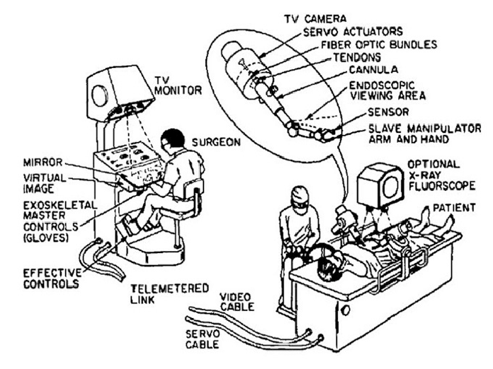

Robotic surgery, first invented in the late 1980s, is a method of performing operations where a surgeon controls a robotic machine with arms instead of manually operating on a patient (see Fig. 1). The robot uses the finger movements of the surgeon on the patient, but makes smaller manoeuvres. Robotic surgery is used as the arms of the machine have more precision, produce clear images for the surgeon to see and can make cleaner incisions. Also, surgeons are more relaxed as they are sitting down (see Fig. 2 and 3).
Fig. 1. University of Alabama, 2023Fig. 2. Professor Aayed Alqahtani, n.d.

Fig. 3. Tamas Haidegger, 2016
Examples of Technologies used for Treating Disease
 Disadvantages
Beneficial Technology
About
Home
Disadvantages
Beneficial Technology
About
Home